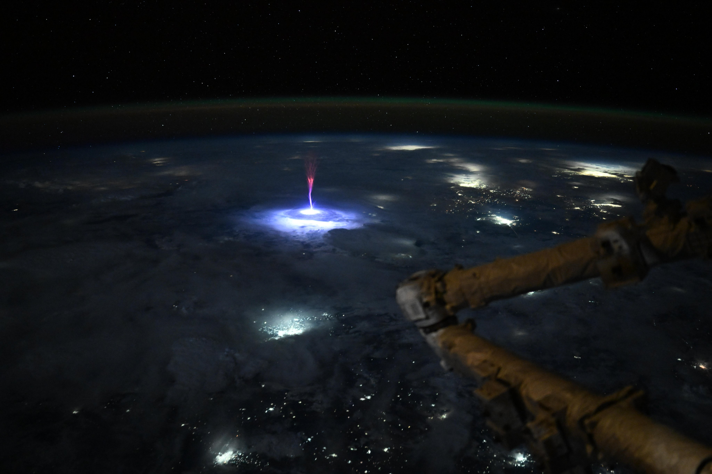
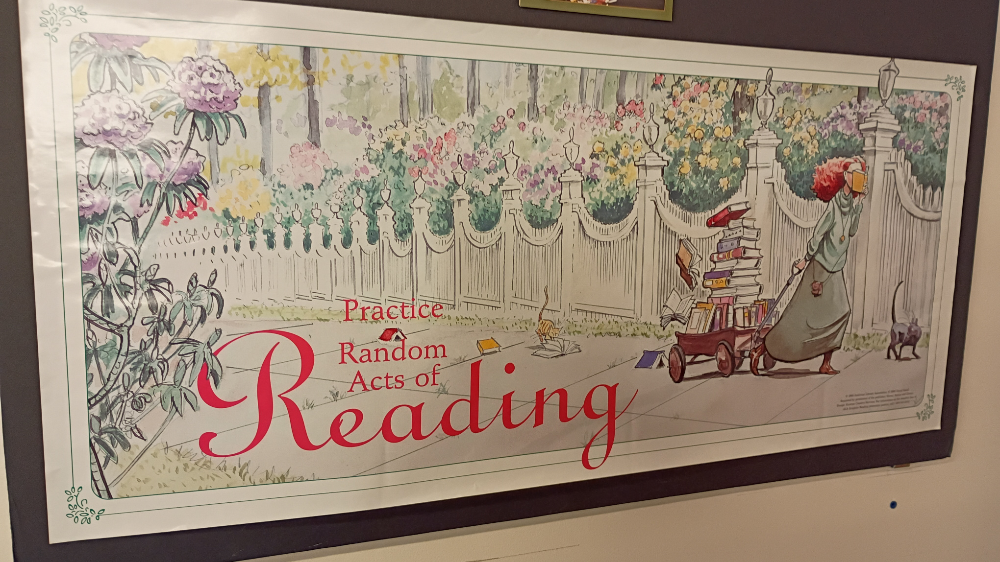

ope...a life
Not the best idea to just go for a drive over the 4th of July weekend. This is why. But a bit before ten pm on the fifth we decided to go for a little drive. Hit a couple beach accesses but there were so many bonfires (neither of us enjoy bonfire smoke) so we started driving around Devil's Lake. It was a little after ten by this point and we saw our first firework of the evening. We'd forgotten that the Devil's Lake Association puts on a fireworks display on the fifth. We found a place to pull over and watch the fireworks. Was nifty.
We need to pay attention and we need to stay in the fight. Because of course we do. But we should spend as much time as we possibly can over the next four years with friends and lovers doing things that bring us joy. Anyone who tells you that making time for joy — however you define it — is a distraction or a betrayal has no idea what they’re talking about. During the darkest days of the AIDS Crisis, we buried our friends in the morning, we protested in the afternoon, and we danced at night. The dance kept us in the fight because it was the dance we were fighting for. It didn’t look like we were going to win then and we did. It doesn’t feel like we’re going to win now but we could. Keep fighting, keep dancing.
Zooming into a star that detonated twice. From the European Southern Observatory
This video zooms into the supernova remnant SNR 0509-67.5, the expanding remains of a star that died by detonating twice. This object is located 160 000 light-years away in the Large Magellanic Cloud, a small galaxy that orbits the Milky Way.
This zoom was made by blending together images taken at different times with different telescopes. The video ends with an image captured with ESO’s Very Large Telescope (VLT), which shows the distribution of different chemical elements ejected when the star died. Calcium is shown in blue, and it is arranged in two concentric shells. This indicates that the star exploded with a double detonation.
Amazing photography from astronaut Nichole "Vapor" Ayers on Instagram. An example:

Just. Wow. As we went over Mexico and the U.S. this morning, I caught this sprite.
Sprites are TLEs or Transient Luminous Events, that happen above the clouds and are triggered by intense electrical activity in the thunderstorms below. We have a great view above the clouds, so scientists can use these types of pictures to better understand the formation, characteristics, and relationship of TLEs to thunderstorms.
Nunchuck bus stop parte seconda
Pacific sunset.
The PNW is a pretty funky place to live. The Oregon Coast doubly so.
There's the Oregon Coast Range which butts right up against the Pacific Ocean. It frequently hails. It frequently rains when it's sunny. This leads to oodles of rainbows. Moss and molds abound. Deciduous trees are never bare and brown. If there aren't leaves on them there's moss. Lots of moss.
Fungi also abound. Mushrooms grow everywhere.
The temperature generally stays between forty and seventy degrees fahrenheit. It rarely snows. When it does it doesn't stick around long. It's a wet cold. This makes it feel much colder than it is. We're used to the dry colds back home. The moisture means hair is flat.
There's a lot of salt in the air. Every couple of months we need to wash the house down to get the salt (and keep the moss) off. If cars are left outside surface rust happens very quickly. Keeping them in a garage seems to ameliorate this issue.
There doesn't seem to be a level place in the joint. Hills up the wazoo. It's a good thing it rarely gets cold enough for water to freeze because with all the water we get around here and all the hills we have, driving or biking or walking would be difficult.
It really does rain a lot. Heavy rains abound. Winds blow and gust hard, well into the double digits. When the winds blow and the rain thunders down...it's some nice moody weather. There are all kinds of lights rains, too. There is little lightning and thunder.
All this is mostly true for the first 1/4 to 1/2 mile of land from the ocean. While much of it rings true for the rest of the Coastal Range as well, there are differences. For instance, it can get much warmer there in the summer and much snowier in the winter.
Practice Random Acts of Reading.
